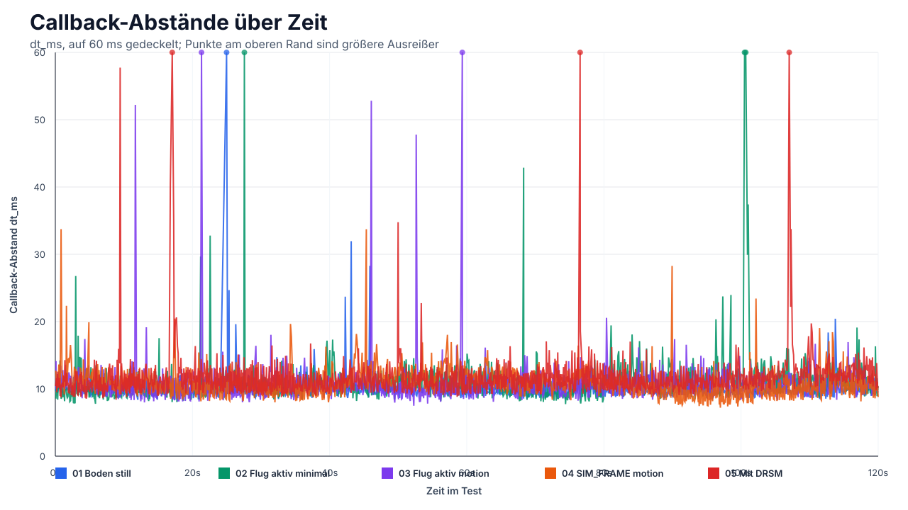
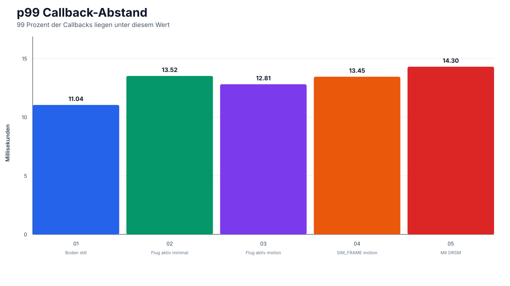
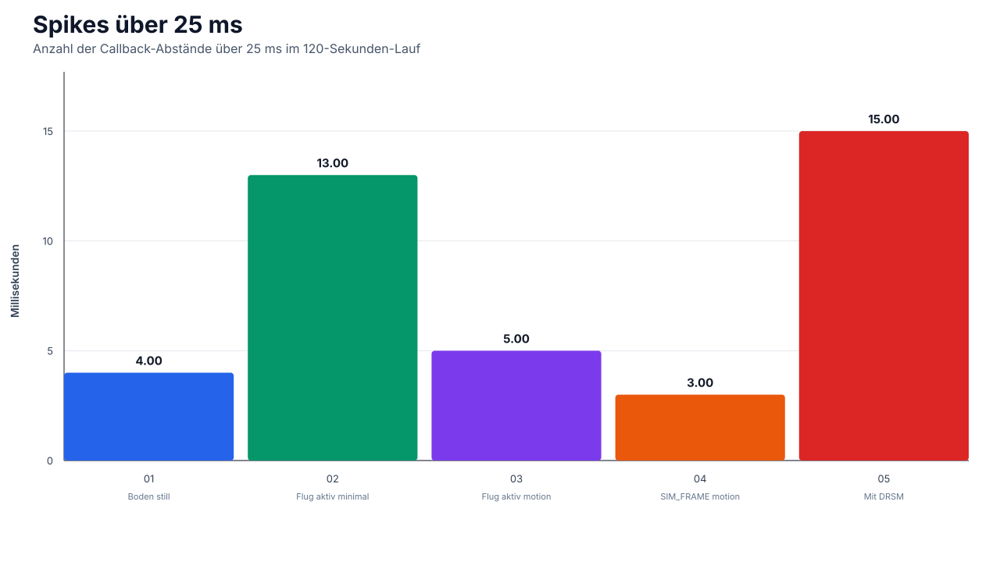
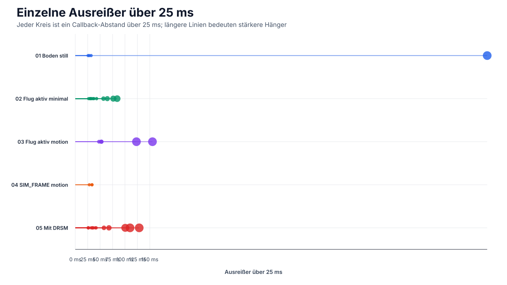

SimConnect Jitter Auswertung
Auswertung der fünf Testläufe. Fokus: Callback-Abstände, p99 und Ausreißer, weil einzelne Spikes für Motion-Ruckeln wichtiger sein können als der Durchschnitt.
Kurzbefund: Ohne DRSM liegt SimConnect meist bei ca. 115-117 Hz. Mit DRSM sinkt der Takt auf ca. 106 Hz und die Ausreißer nehmen zu.
| Test | avg ms | Hz | p95 | p99 | max | >25 ms | >50 ms |
|---|---|---|---|---|---|---|---|
| 01 Boden still | 8.55 | 116.97 | 9.98 | 11.04 | 828.72 | 4 | 1 |
| 02 Flug aktiv minimal | 8.67 | 115.32 | 11.22 | 13.52 | 84.30 | 13 | 4 |
| 03 Flug aktiv motion | 8.55 | 116.97 | 10.93 | 12.81 | 155.31 | 5 | 4 |
| 04 SIM_FRAME motion | 8.75 | 114.22 | 11.51 | 13.45 | 33.74 | 3 | 0 |
| 05 Mit DRSM | 9.47 | 105.56 | 12.01 | 14.30 | 128.63 | 15 | 5 |



